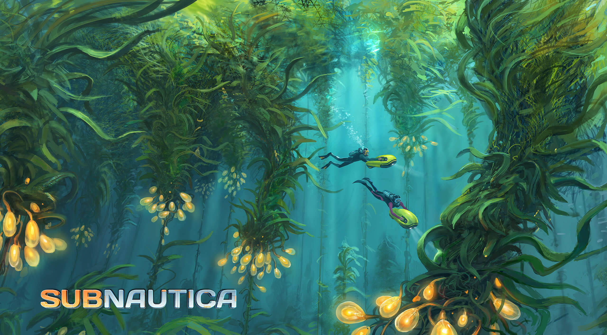

28 Jun 2023
It's a big blue planet, Far in the universe. Just like the Earth, except bluer than the Earth. Yep. A planet all covered by the ocean. Take a dive in the shallow waters, I can guarantee you never seen anything like this before.

Schools of cute and cuddly fish swimming around you. Sunlight shines through the surface, creating bright white patters that cover the sea bed.

Waite till the night comes. Ocean puts on her own lights. Blue and green dots of lights flash through the pitch black waters, throwing the day time out of his place in the contest of "Heaven on real world".

©alphacoders.com ↗Although you feel like it's the place of living you always dreamed of, time to wake up, because you are the only survivor on the planet after a crash landing. "From what I have to survive form ?". Let me give you a little advice. "Don't go too deep."